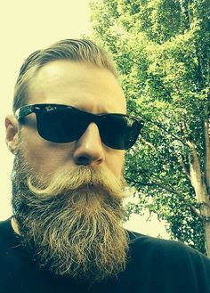

|

Салям - Младший и Единственный Служащий детективного агентства "Белый Гусь". Да-да, именно с большой буквы. Ибо именно его считают тем крутым сыщиком который распутывает сложнейшие преступления. Салям выглядит очень представительно - здоровенный, как шкаф, накачаный мужик с окладистой бородой и в тёмных очках (чтобы скрывать отсутствующий взгляд во время разговора). Основная забота Саляма - сидеть в офисе агентства и изображать из себя великого детектива. Что поделаешь - пятерым подросткам и гусю собственное детективное агентство иметь не полагается. Вот и приходиться держать такого вот Саляма, один вид которого внушает уверенность, что дело будет раскрыто, и диктовать ему что говорить в микрофон, который Салям держит в ухе. Забавно, но как на самом деле зовут Младшего и Единственного Служащего агентства, в самом агентстве помнит, наверное, только Севка - и то потому, что регулярно таскает Саляму на подпись различные документы. Салямом же ребята прозвали мужика с легкой руки Кисоньки, которая была поначалу возмущена тем, что они тут все работают, а он знай себе салями трескает. Вообще салями - любимая колбаса, без которой Салям просто жить не может. "Вы мне лучше зарплату недодайте, но колбаса чтоб была!" говорит он. Впрочем, хотя Салям - сплошная наивность, но задирать его - себе же хуже. Как-то он спас Вадьку, который попался бандитам, за которыми вёл слежку, и отметелил о диннадцать человек своей любимой колбасой. Надо признать салями с честью прошла боевое крещение, и, кроме нескольких следов от зубов, в целом не пострадала. |